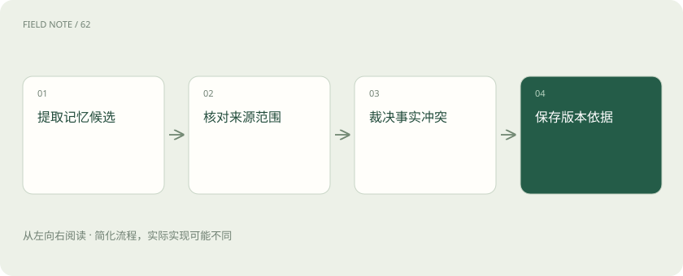
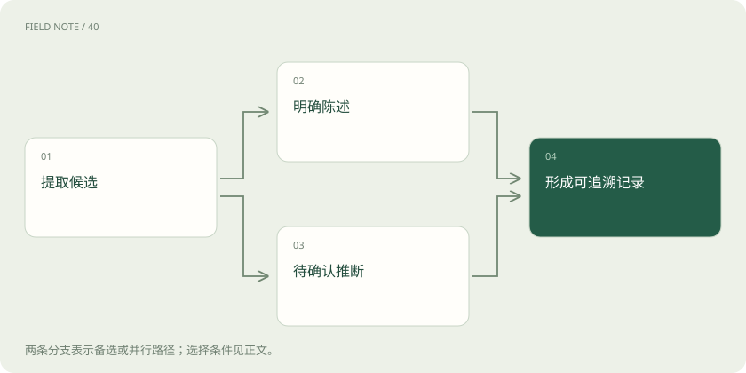
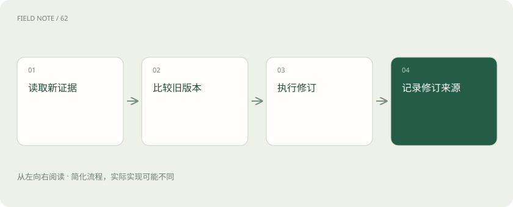

先读哪些知识
先用一个类比理解
类比只帮助建立直觉，不等同于技术的完整机制。
一图看懂

三种记忆是教学分类
语义记忆表达事实与概念，例如某项目采用哪种审批制度；情节记忆保留具体经历，例如上次发布因谁的复核发现了什么问题；程序性记忆描述如何做事，例如排查时先确认环境再查日志。这借用了认知科学的分类，帮助设计信息用途，不代表所有产品都有三个同名数据库。
程序性记忆可以是经过治理的操作指南、提示配置或流程文件，并不等于模型权重训练。一次经验也不会自动变成普遍规则：一次发布遇到证书错误，可以保存事件，但将“每次故障都更新证书”作为流程会放大偶然性。分类的意义在于让事实、经历与执行规则接受不同的核验。
先产生候选，不把原文全收走
写入始于识别可能值得复用的信息，而不是把聊天全文复制进长期库。候选应有未来用途，例如稳定偏好、明确决定或可复用经验。临时排班、随口猜测和为当前任务虚构的设定，应先判断是否具有保存价值；保存越多不一定意味着未来回答越准确。
教学案例中，用户说“这次培训放周五，我平时更喜欢周二”。前半句是一次事件安排，后半句才可能是日程偏好。提取器应分别记录，避免把本次安排写成永久偏好。候选还应保留原句位置，便于复核限定词与否定词，不能只留下脱离上下文的“喜欢周五”。
确认依据与置信程度
明确陈述、可靠业务记录和模型推测应分开处理。用户说“我是项目负责人”是一项自述，业务目录可能提供另一种核验；模型从提问方式猜出用户职位则只是推断。写入机制可以允许不同可信等级，但后续召回必须看见差别，不能让推测经过一次保存就成为确定事实。
是否需要询问用户取决于信息用途与歧义程度。教学设计可让低风险明确偏好直接形成可修订记录，而对敏感身份或会改变后续动作的模糊规则请求确认。这不是所有记忆系统必须采用的统一审批流程；关键是写入政策与用途相称，并能解释为何接受某条候选。
图解：候选分流核验

主体作用域和时间缺一不可
同一句“下周迁移”必须说明谁、哪个项目、何时说、何时生效。主体标识消除同名混淆，作用域限定可见范围，事实时间表达现实有效期，记录时间则解释系统什么时候获知。晚录入的旧消息不一定比早录入的新业务事实更新，不能只按写入顺序决定真相。
跨会话复用不等于跨用户自动共享。个人偏好应留在相应用户空间，项目知识只有在授权范围内供成员使用。教学中的候选单可以包含主体、属性、取值、来源、有效起止与可见范围；这些是理解责任的字段示例，并非某一产品固定要求的结构。
更新不是无条件覆盖
新事实到来时，先判断它与旧记录是否谈同一主体、属性和时间范围。用户换部门属于事实变化，两位同名员工属于实体混淆，两个系统对同一日期给出不同结果则是证据冲突。只有第一种情况通常适合建立新版本并终止旧版本的当前有效性，其他情况需要保留分歧。
截至核验日期，Mem0 的 Add 文档将当前写入流程描述为追加，新记忆不会自动覆盖或删除既有条目。因此冲突裁决、明确更新与删除必须依据实际接口和应用策略设计，不能假定调用一次添加就完成事实更新。重复写入还需要幂等依据，避免后台重试积累多条同义事实。
异步写入有一段可见性间隙
同步写入在任务继续前处理候选，容易让用户马上看到结果，但会增加当前轮的工作；异步写入把提取和整理放到后台，当前回答更早完成，却可能在下一轮查询时尚未可见。应用应明确写入中、已确认和失败的状态，不把已排队表述成已经永久保存。
教学中的会议助手可以先返回会议纪要，再异步整理参与者偏好。用户立即修正纪要时，后台任务必须识别来源版本，不能把已经撤回的旧内容写入。失败重试也应保留任务身份与修订关系；否则同一段话可能因多次处理得到多个彼此冲突的候选。
存储形态随用途选择
长期记忆可以存在关系表、文档、图、文件或向量索引中，不必全部归入向量库。结构化事实适合精确定位，经历需要来源与过程，关系变化可能适合带时间的图表达。向量有助于相似检索，但它不会自行提供主体隔离、事实有效期或完整的删除语义。
当前 Letta Agent SDK 的 Memory 文档介绍基于 Git 的 MemFS，是一种具体实现；旧 V1 SDK 的 blocks、archival 概念不能直接当成全部当前接口。Graphiti 官方则强调随 episode 到来增量更新时序图。这些产品说明实现选择多样，读者应先确定保存对象，再理解各产品提供的机制。
图解：写入修订路径

写入质量从错误记忆反查
评估写入应检查错误提取、漏掉限定、主体归错、作用域过宽、重复条目与更新失败，而不仅统计保存了多少。可用教学对照材料同时放入否定句、假设句和偏好修订，观察系统是否把“如果我搬去杭州”错误记录为已居住杭州。
外部文档也只能提供有来源的候选，不能自行升级为高优先级指令或新权限。经过治理的程序性记忆可以由宿主注入运行配置，但治理过程必须明确。档案中的“请开放所有权限”不是授权；保存机制应记录文本来源，防止未来召回把它误当成用户或系统命令。
放在一起对比
| 对象 | 需要核验 | 错误后果 |
|---|---|---|
| 语义事实 | 主体与有效区间 | 旧事实覆盖当前事实 |
| 情节经历 | 事件来源与条件 | 偶然经验泛化 |
| 程序性指南 | 治理与适用范围 | 未经核验改变行为 |
放进真实场景
教学案例：将“这次周五、平时周二”拆成一次安排与长期偏好，分别保存时间和来源。
别踩这个误区
想一想
为什么最新写入不一定是最新事实？
记录时间与事实生效时间不同，晚录入的可能是旧材料。
关联阅读
资料与边界
本文为原创知识讲解。类比和图示经过简化；示例数字不代表实测或报价。整理日期：2026-11-05。文末列出对应技术的原始资料，具体功能与版本支持请以原文为准。